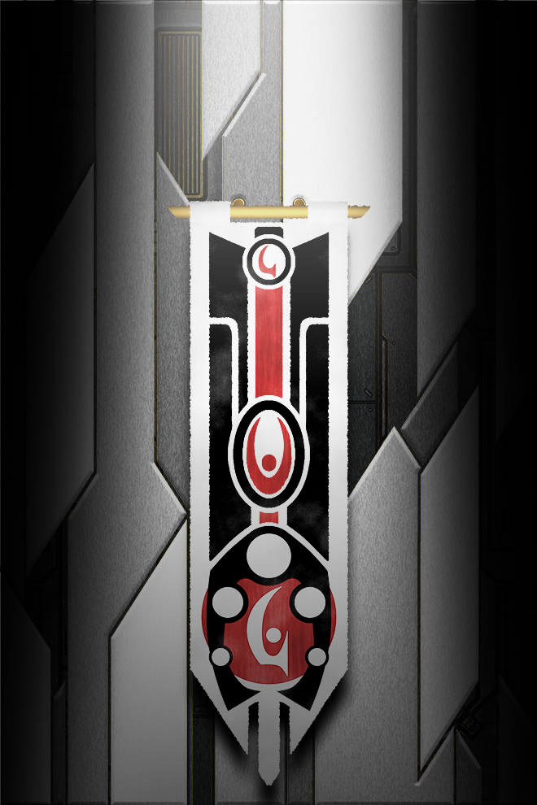

PRISM OF STARS
Fautja (name pending)

This page has content that may be considered Not Safe For Work
Fautja |
|
|---|---|
|  | |
Species Info |
|
| Biology: | Quasi-Insectoid |
| Lifespan: | ~200 years |
| Magic Capability: | Decent |
Culture Info |
|
| Government: | Dispersed Tribalism |
A species of arthropod people who have advanced technologically faster than they have societally. Clan-based society with no real overt government and tons of traditions. Capable of magic but it's not usually visible because of a big game hunter culture with pretenses of "fairness" to their prey.
Table of Contents
Attributes
Biology
Have a crab-like four-mandible jaw and three eyes. There's an ethnic split where in some the eye is seemingly underdeveloped, but is capable of seeing magical energies, meanwhile in others the eye is a normal third eye. Inexplicably have a very human-like sexual dimorphism, though with different gender dynamics.
Women have breasts, or breast-like equivalent organs, which serve a similar purpose of feeding the young and emergency fat storage, but function slightly differently, as instead of a gland that secretes the nutrienty fluid on the outside, the child instead has to use their long tongue to reach inside the breast.
Culture
Before modern times, [PENDING] women were commonly left alone, as large prey on their planet was very rare and also very angry, and so the men had to go on very long hunts to feed the tribe long-term, with the full expectation that they might just not come back.
As such women had to both keep the house, hunt smaller prey, forage and, most importantly, protect the tribe, especially considering there was a very high chance most of the males might just not come back, which altered even the base species dynamics massively.
Don't really outright war but tend to raid. Tend to weird others out with how a single clan can raid one day and then come in and trade another, have an extremely ingrained weregild system.
Suffer from brain drain as lots of their people emigrate. The migrants make up a solid chunk of the galactic mercenary corps.
Language
The languages of the Fautja technically have voiceless/voiced sound pairings, but in a somewhat different way, as the voiced consonants are produced not via the vibration of vocal cords, but rather via the addition of a buzzing sound to the voiceless consonant.
Technology
Capable of magic but it's not usually visible because of a big game hunter culture with pretenses of "fairness" to their prey.
On average quite advanced, but every tribe has their own techbase peculiarities.
Historical events
TBA
Clans
{kind=link}
The Fautja are divided into a myriad of clans, big and small.
With no central government structure of any sort, the only way of dealing with inter-clan issues they have is a massive clan meeting which, admittedly, usually devolves into squabbles unless something especially world-shaking causes them to deal with something.